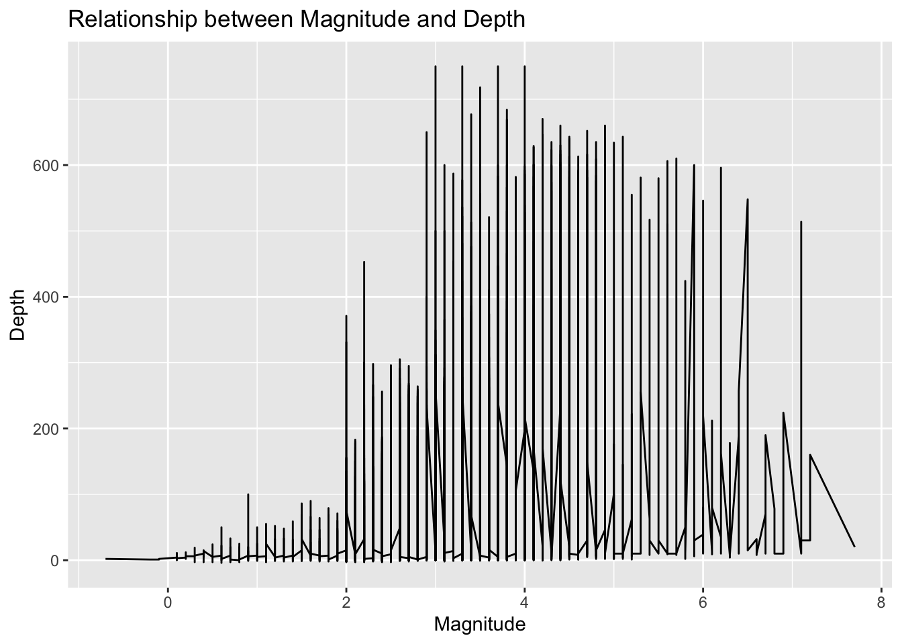
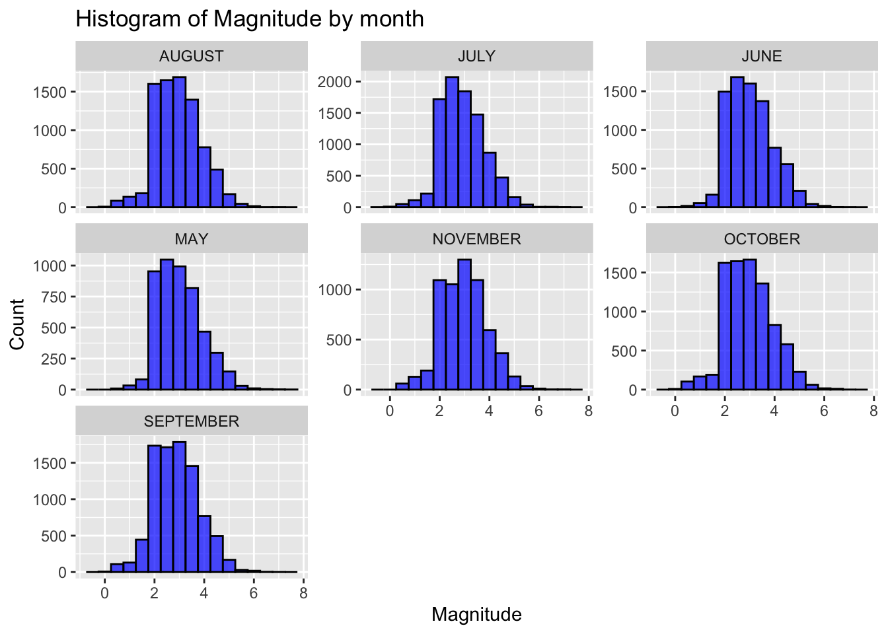
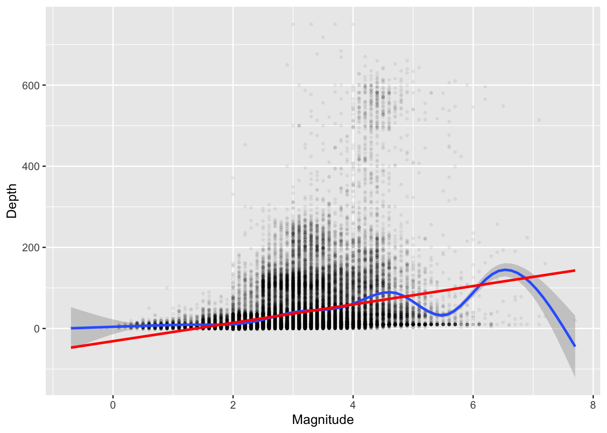
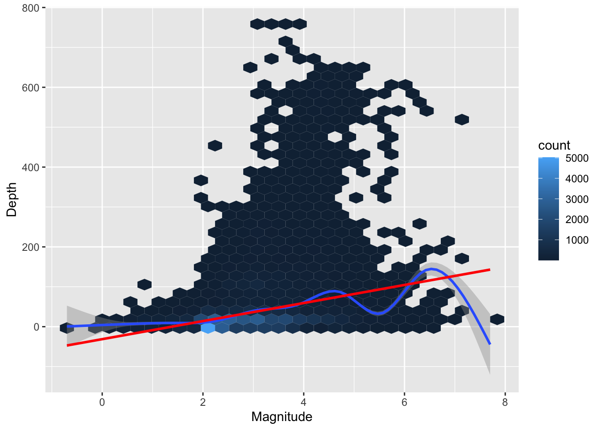

Rows: 53539 Columns: 7
── Column specification ────────────────────────────────────────────────────────
Delimiter: ","
chr (3): Date & Time, Lands, Country
dbl (4): Latitude, Longitude, Depth, Magnitude
ℹ Use `spec()` to retrieve the full column specification for this data.
ℹ Specify the column types or set `show_col_types = FALSE` to quiet this message.
##How depth and magnitude differ in our visualizations
ggplot(earthquake, aes(x = Magnitude, y = Depth )) +geom_line() +labs(title ="Relationship between Magnitude and Depth",x ="Magnitude",y ="Depth")

# THE DATA IS TOO GIANT IN ORDER TO PLOT INTO A # LINE PLOT BUT WE CAN SEE THAT THE MAGNITUDE # BETWEEN 3 AND 4 HAS THE GREATEST DEPTH
##Create a histogram with facets
ggplot(earthquake, aes(x = Magnitude)) +geom_histogram(binwidth =0.5, fill ="blue", color ="black", alpha =0.7) +facet_wrap(~Month, scales ="free_y") +labs(title ="Histogram of Magnitude by month", x ="Magnitude", y ="Count")

# Manginutde and depthggplot(earthquake,aes(x = Magnitude, y = Depth)) +geom_point(alpha = .05, size = .75) +geom_smooth() +geom_smooth(method = lm, color ='red')
`geom_smooth()` using method = 'gam' and formula = 'y ~ s(x, bs = "cs")'
`geom_smooth()` using formula = 'y ~ x'

# magnitude and depthggplot(earthquake,aes(x = Magnitude, y = Depth)) +geom_hex() +geom_smooth() +geom_smooth(method = lm, color ='red')
`geom_smooth()` using method = 'gam' and formula = 'y ~ s(x, bs = "cs")'
`geom_smooth()` using formula = 'y ~ x'

ggplot(earthquake) +geom_bar(aes(x = Magnitude, y =stat(count), group =1))